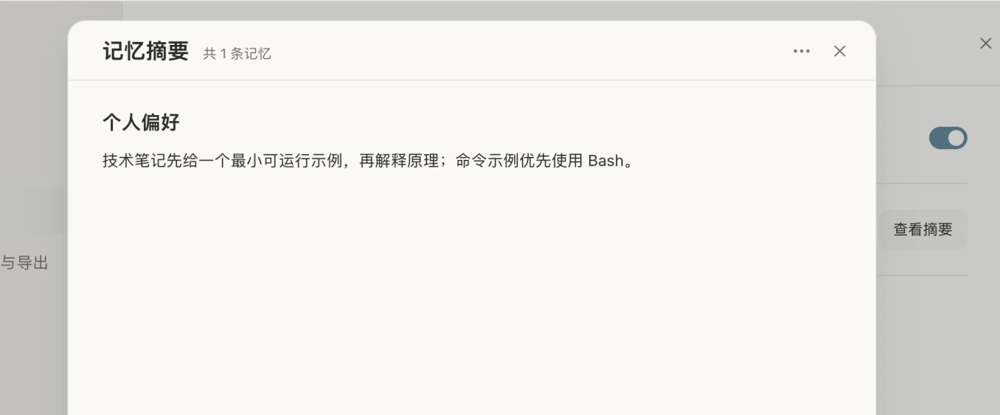
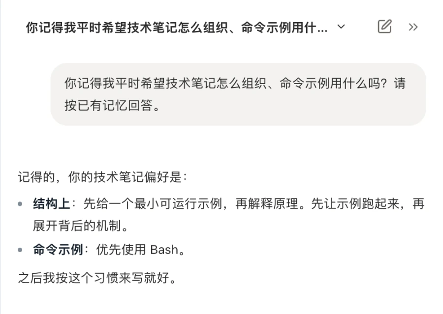

整篇修改，先看对照。
例如让全文更适合初学者。打开「原文对照」，看清原来怎么写、改完是什么样，再决定是否应用到笔记。

草稿的大纲可以加章节、改名、调整顺序。读笔记时，展开右侧章节目录，就能直接跳到想看的地方。

例如让全文更适合初学者。打开「原文对照」，看清原来怎么写、改完是什么样，再决定是否应用到笔记。
在编辑器里选中文字，点「AI 改一下」。可以直接润色，也能交代怎么改。看过结果后，再替换选中的文字。

例如先给一个能跑的例子，再解释原理。开启长期记忆后，知流可以在后续对话中参考这类偏好。记住的内容可以在「记忆摘要」里查看和管理。

